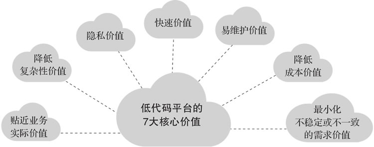
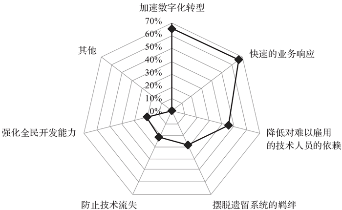
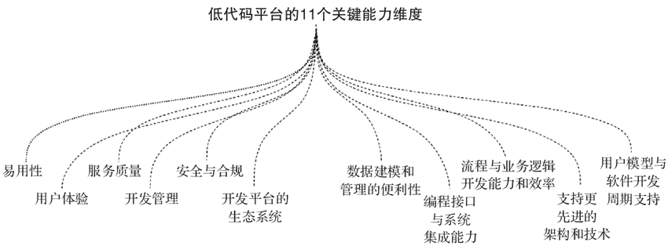

首页 > 编程笔记
低代码平台介绍（非常详细）
数字化转型涉及企业的方方面面，其中寻求技术及实现手段上的突破是决策者需要考虑的主要问题之一。顺应这种潮流，近几年发展起来的“低代码技术”作为解决企业数字化转型以及增强企业复原力的有力手段，得到越来越多的关注。
低代码平台是一个新概念，2014 年前后才被正式提出。但是要注意，软件开发的简单化始终是软件技术发展的原动力。
本节主要介绍低代码平台的基本概念、分类以及典型低代码平台在一般数字化转型中给企业带来的价值和优势，同时从不同的维度来简要剖析低代码平台应该具备的能力。
承载企业运维能力的 IT 系统和业务系统需要能够承受环境负荷的压力，具备满足快速变化的需求的能力。该能力被一些学者（例如西班牙的桑奇和波勒）定义为企业复原力，旨在为企业提供预防和预测的能力，改变企业的性质和适应不断变化的环境的能力以及应对动态需求的能力。
因此，速度是当前企业数字化及 IT 系统转型中一个非常重要的影响因素。
为了提高企业的适应能力，以便迅速有效地满足市场需求，为企业内外部快速开发满足业务和市场需求的软件解决方案，在历经最底层的汇编、高级语言、更高效率的编程框架（如 Spring 框架、大前端框架等）后，计算机科学领域的大量研究工作集中在一个共同的目标上：实现软件的高效构建，无须重复传统的手动编程，同时兼顾业务人员和专业开发人员的更多参与。
有鉴于此，低代码平台被视为一种新机制，可促进软件的快速开发及其自动化，以满足当前企业需求并促进弹性数字化转型。
“低代码”一词最早由 Forrester Research 的 Clay Richardson 和 John Rymer 在 2014 年提出。这一年在他们发表报告《面向客户应用的新开发平台出现》之后，低代码平台正式诞生。在这份报告中，他们创造了“低代码”这一术语，并对低代码的技术、用途和市场进行了概述，同时指出，许多公司更喜欢选择低代码替代方法，以便快速、连续地进行应用交付。
低代码，顾名思义，就是指开发者写很少的代码，通过低代码平台提供的界面、逻辑、对象、流程等可视化编排工具来完成大量开发工作，降低软件开发中的不确定性和复杂性，从而大幅提升开发效率，让企业能够降低开发成本，降低技术门槛，快速创新应用，实现快速试错，敏捷迭代。
在 Gartner 的定义中，低代码平台被称为企业级低代码应用平台（Enterprise Low-Code Application Platform，Enterprise LCAP），是支持快速应用开发，使用陈述性、高级的编程抽象（如基于模型驱动和元数据编程语言）实现一站式应用部署、执行和管理的应用平台。
不同于传统的应用平台，低代码平台支持用户界面、业务逻辑和数据服务的开发，并以牺牲跨平台的可移植性、应用开放性为代价来提高生产效率。
目前，广义的低代码是指所有可以帮助缺少编程基础的人员快速完成软件开发的技术和工具。Gartner 认为，低代码主要有以下几个主流分支：
Gartner的研究范围也扩大到 iBPMS，包括可持续的智能和动态流程管理系统。尽管模型驱动意味着低代码，但其中一些可以实现复杂流程和决策的模型既复杂又专业，这可能需要相关专家协助开发。
低代码平台的诞生，使得原本不具备 IT 系统或应用系统开发能力的非技术人员参与开发成为可能，这就带来一个新的“全民开发者”的概念。
这个概念是由 Gartner 创造的，根据 Gartner 的说法，全民开发者是指使用企业 IT 认可的开发和运行时环境为他人创建新的业务应用的用户。专门针对低代码/无代码领域的全民开发者是为自己或公司创建商业应用的商业用户。
因此，低代码平台主要面向如下两类人员提供快速开发应用的能力：
因此，低代码平台是可以开发应用的生态系统，使用者通过已经构建并预配置的能力，可以最大限度减少手动定义和实现代码。低代码平台强调可视化界面，使没有技术背景的人能够相对轻松地创建和部署业务应用。
从低代码技术的起源来看，低代码平台的主要目标是允许企业开发应用而不需要复杂的工程来促进其配置，从而实现快速性和敏捷性。此外，这些平台也为企业提供了更经济的方式来满足市场或企业自身的要求。借助低代码平台，企业可以为移动或桌面设备等创建多功能和高信息管理功能的应用。
低代码平台技术目前在国内外都发展迅猛。早在低代码的概念完善之前，Salesforce 公司就在 1999 年提出了“软件终结”的口号，并面向开发者研发了 force.com 应用开发平台，允许开发者基于此快速开发 CRM 软件系统，从而开启了低代码应用开发的航程。OutSystems 和 Mendix 分别于 2001 年、2005 年创立，专注于低代码开发平台的建设。微软在 2015 年推出了融合 AI 技术的低代码平台 Power Platform。
在国内，低代码平台在近几年如雨后春笋般涌现。明道云、简道云、APICloud 都加入了低代码赛道，科技巨头华为、阿里巴巴等也都纷纷推出了自己的低代码平台。
因此，低代码平台能够兼顾技术和业务需求，快速对市场作出反馈，并为企业内部系统的构建带来 7 大核心价值，如图 1 所示。
Forrester Research 的 Clay Richardson 和 John Rymer 在他们 2014 年发表的报告中指出，低代码平台会带来一些好处，但也会有一些风险。基于上面介绍的价值，低代码平台提供了有效的企业 IT 转型解决方案，实现应用交付的自动化和高速度，并提高平台更新效率。然而，他们也强调了数十项在技术管理之外的风险，以及客户对于低代码平台如何融入其更广泛的产品组合几乎没有共识。
综合来看，阻碍使用低代码平台的三个主要因素如下：
除此之外，在编写代码的方式下，增加人力并不能带来对等的开发总时长缩短，传统开发是紧耦合、串行开发模式，即开发者之间需要紧密配合、联调等，很多开发环节需要等待上一环节完成才能进行。低代码平台非常关键的一点是，底层核心技术从紧耦合的产品（如 MySQL、Java 等）变成松耦合的产品（如 NoSQL、JavaScript 甚至是无代码方式等），从而实现从串行开发到并行开发的转变。
效率的提升会成比例减少人数和开发天数，同时，低代码开发模式降低了对开发者开发水平的要求，很多开发工作不再需要高薪聘请专业的开发人才来完成，这样也降低了人员日均工资，从而降低整体成本。
在这些受访者中，有 66% 的人将加速数字化转型、提高对业务的响应能力作为他们使用或将使用低代码平台的主要动机；有 45% 的人指出，对难以雇用的技术人员的依赖性正在降低。
为什么有这么多的人选择将低代码平台作为数字化转型的利器？主要有三方面的原因。
在这种情况下，低代码便是极佳的候选技术。它利用一种新的软件文化，让来自不同领域的工程师们的思维和逻辑相互渗透，降低人力和时间成本。用户可以基于图形化界面，通过拖曳、参数配置、逻辑定义、模板调用等方式，完成软件应用的构建，将开发效率提升几倍甚至十几倍。
因此，应用需要更简便地与现有信息系统集成，并在新技术出现时更好地适应新变化。
这种情况在物联网领域尤为突出。物联网的应用种类更多，集成难度更高。一套有效的物联网解决方案需要调度端、边、管、云、用各方资源，要兼顾传感、语音等交互方式，随时保持 5G、Wi-Fi 等连接在线，还要适应环境各异的物理空间里的各种状况。这就需要物联网的应用与大量的数据资源、各种传感器、外部 AI 与分析能力、边缘计算等通通相连。
低代码除了解决已有系统的打通和串联问题，还可以直接构建新的应用。
使用低代码平台，让用户拥有解决自身需求的技术，这也是此类平台现在备受关注的重要因素。在低代码这个“翘板”的两端，一端，低代码降低了编程和开发的复杂度；另一端，用户可以将更多精力用于应用和流程的抽象提炼，构建通用模块，将各种能力转化为服务。
企业自身对现有和未来业务的理解、对工具的熟悉以及清晰的逻辑和产品思维，是实现企业数字化转型的一个关键点。低代码不仅让公司内部的各种应用可以用搭积木的方式实现，而且可以将面向企业外部的解决方案组合成行业套餐。
这种思维贯穿于工业互联网平台、数据中台、云原生、微服务等领域，可以说各种工具仅仅是手段，最终输出的是理念和价值。
降低开发门槛、打破信息孤岛、加速能力服务化，低代码快速发展的背后是技术、企业和商业期望的变化。
企业级低代码平台还应包含其他功能，例如：
基于上述技术要素，Gartner 共列出了低代码平台的 11 个关键能力维度，如图 3 所示。
一般来说，第一层决定了项目是否可以成功交付，而第二层则决定了项目的开发成本。无论如何，使用者都应关注第一层。在此基础上，如果项目以工作流为主，则还应该将第二层作为重要的评估指标。
值得一提的是，另一家权威行业机构 Forrester 在其报告《Forrester Wave：面向应用程序开发和交付专业人员的低代码平台（2019 年第 1 季度）》中，将编程接口认定为企业级低代码平台的重要标志，不具备编程接口的“低代码”被划归为“无代码”，转移到那些只适用有限用例的平台报告中。
低代码平台是一个新概念，2014 年前后才被正式提出。但是要注意，软件开发的简单化始终是软件技术发展的原动力。
本节主要介绍低代码平台的基本概念、分类以及典型低代码平台在一般数字化转型中给企业带来的价值和优势，同时从不同的维度来简要剖析低代码平台应该具备的能力。
低代码平台的概念和分类
目前，由于企业的经营日益复杂，企业内部各业务实体之间以及企业与企业之间的业务关联不断增强，业务数据交互日益频繁，企业面临着越来越多的难题。此外，市场的变化频率越来越快，这意味着企业需要迅速且灵活地响应这些变化，以满足环境的可变要求。承载企业运维能力的 IT 系统和业务系统需要能够承受环境负荷的压力，具备满足快速变化的需求的能力。该能力被一些学者（例如西班牙的桑奇和波勒）定义为企业复原力，旨在为企业提供预防和预测的能力，改变企业的性质和适应不断变化的环境的能力以及应对动态需求的能力。
因此，速度是当前企业数字化及 IT 系统转型中一个非常重要的影响因素。
为了提高企业的适应能力，以便迅速有效地满足市场需求，为企业内外部快速开发满足业务和市场需求的软件解决方案，在历经最底层的汇编、高级语言、更高效率的编程框架（如 Spring 框架、大前端框架等）后，计算机科学领域的大量研究工作集中在一个共同的目标上：实现软件的高效构建，无须重复传统的手动编程，同时兼顾业务人员和专业开发人员的更多参与。
有鉴于此，低代码平台被视为一种新机制，可促进软件的快速开发及其自动化，以满足当前企业需求并促进弹性数字化转型。
“低代码”一词最早由 Forrester Research 的 Clay Richardson 和 John Rymer 在 2014 年提出。这一年在他们发表报告《面向客户应用的新开发平台出现》之后，低代码平台正式诞生。在这份报告中，他们创造了“低代码”这一术语，并对低代码的技术、用途和市场进行了概述，同时指出，许多公司更喜欢选择低代码替代方法，以便快速、连续地进行应用交付。
低代码，顾名思义，就是指开发者写很少的代码，通过低代码平台提供的界面、逻辑、对象、流程等可视化编排工具来完成大量开发工作，降低软件开发中的不确定性和复杂性，从而大幅提升开发效率，让企业能够降低开发成本，降低技术门槛，快速创新应用，实现快速试错，敏捷迭代。
在 Gartner 的定义中，低代码平台被称为企业级低代码应用平台（Enterprise Low-Code Application Platform，Enterprise LCAP），是支持快速应用开发，使用陈述性、高级的编程抽象（如基于模型驱动和元数据编程语言）实现一站式应用部署、执行和管理的应用平台。
不同于传统的应用平台，低代码平台支持用户界面、业务逻辑和数据服务的开发，并以牺牲跨平台的可移植性、应用开放性为代价来提高生产效率。
目前，广义的低代码是指所有可以帮助缺少编程基础的人员快速完成软件开发的技术和工具。Gartner 认为，低代码主要有以下几个主流分支：
1) 无代码开发平台
无代码开发平台属于低代码平台的一种，不提供或者仅支持非常有限的编程扩展能力，一般仅用来开发内部管理类或市场营销类表单。2) 低代码应用平台（LCAP）
LCAP 属于狭义的低代码平台，是万金油类产品，可用来开发包含前端和后端的应用。它关注通过声明式的模型驱动和基于元数据的服务来提供快速的应用开发、部署和执行。这个市场囊括了大部分低代码技术供应商，主要产品是具备自描述性的无代码应用开发工具。3) 多重体验开发平台（MXDP）
MXDP 提供快速开发跨平台 App 的工具，突出前端开发能力，一般用来开发多平台/多终端应用。这些产品通过提供一套包含前端开发工具和后端服务的集成套件，使开发人员（有时甚至是非开发人员）能够跨各类数字设备进行相应用途和形式的扩展性应用开发。它们支持自定义移动应用、响应式 Web 和渐进式 Web 应用（PWA）、沉浸式用户体验及对话式应用。4) 智能业务流程管理套件（iBPMS）
整合了 AI 等技术的业务流程管理系统（BPMS）突出后端流程定义和数据整合能力，一般用于解决大型企业的跨系统业务流程。这类模型驱动的（因而是低代码的）开发平台可以在操作模型和应用时动态变化。它们通过流程和业务规则/决策实现业务操作的自动化。Gartner的研究范围也扩大到 iBPMS，包括可持续的智能和动态流程管理系统。尽管模型驱动意味着低代码，但其中一些可以实现复杂流程和决策的模型既复杂又专业，这可能需要相关专家协助开发。
低代码平台的诞生，使得原本不具备 IT 系统或应用系统开发能力的非技术人员参与开发成为可能，这就带来一个新的“全民开发者”的概念。
这个概念是由 Gartner 创造的，根据 Gartner 的说法，全民开发者是指使用企业 IT 认可的开发和运行时环境为他人创建新的业务应用的用户。专门针对低代码/无代码领域的全民开发者是为自己或公司创建商业应用的商业用户。
因此，低代码平台主要面向如下两类人员提供快速开发应用的能力：
- 业务人员：平台通过提供大量界面模板、业务模板、流程模板和对象模型，使业务人员能够根据实际业务需要以积木式组装的方式快速拼装应用系统，快速实现应用创新。
- 开发人员：利用平台的页面编排工具和流程编排能力，开发人员可在平台上组件化、微服务化已有的大量服务，同时，基于数据共享能力，编写少量代码就可以实现自己想要的应用管理系统。
因此，低代码平台是可以开发应用的生态系统，使用者通过已经构建并预配置的能力，可以最大限度减少手动定义和实现代码。低代码平台强调可视化界面，使没有技术背景的人能够相对轻松地创建和部署业务应用。
从低代码技术的起源来看，低代码平台的主要目标是允许企业开发应用而不需要复杂的工程来促进其配置，从而实现快速性和敏捷性。此外，这些平台也为企业提供了更经济的方式来满足市场或企业自身的要求。借助低代码平台，企业可以为移动或桌面设备等创建多功能和高信息管理功能的应用。
低代码平台技术目前在国内外都发展迅猛。早在低代码的概念完善之前，Salesforce 公司就在 1999 年提出了“软件终结”的口号，并面向开发者研发了 force.com 应用开发平台，允许开发者基于此快速开发 CRM 软件系统，从而开启了低代码应用开发的航程。OutSystems 和 Mendix 分别于 2001 年、2005 年创立，专注于低代码开发平台的建设。微软在 2015 年推出了融合 AI 技术的低代码平台 Power Platform。
在国内，低代码平台在近几年如雨后春笋般涌现。明道云、简道云、APICloud 都加入了低代码赛道，科技巨头华为、阿里巴巴等也都纷纷推出了自己的低代码平台。
低代码平台的7大核心价值
低代码平台采用可视化的开发方式，一方面可以降低对业务人员掌握编程语言及开发环境的能力要求；另一方面，基于业务和开发逻辑分离的方式降低了对开发人员理解业务的能力要求。因此，低代码平台能够兼顾技术和业务需求，快速对市场作出反馈，并为企业内部系统的构建带来 7 大核心价值，如图 1 所示。

图 1 低代码平台的7大核心价值
图 1 低代码平台的7大核心价值
1) 隐私价值
低代码应用可以由没有深厚技术功底的业务人员开发，因此企业可以不将这些开发任务外包给第三方，而是交给内部人员完成，这增强了保密性。2) 快速价值
由于代码的主要部分已经开发好，用户无须手动编写代码，而只需直观地配置应用或进行必要的调整，就能开发出他们需要的应用。Forrester Research 进行的一项调查显示，低代码平台将开发速度加快了 5~10 倍。3) 降低成本价值
由于开发周期缩短，无论应用是由公司开发还是由外包人员开发，成本都会降低。4) 降低复杂性价值
应用不是从头开始构建的，其开发已经简化，所以开发人员能够更专注于自定义软件以满足用户的要求。5) 易维护价值
软件维护至关重要，要求能快速更改软件，确保应用提供的服务与业务需求之间保持一致。由于低代码平台提供的代码很少，因此几乎没有代码需要维护。6) 贴近业务实际价值
低代码平台提供简单直观的界面作为应用部署的开发环境。在这种情况下，不需要技术知识，这些应用的最终用户将成为其开发人员，因为他们了解业务需求。根据调查，44% 的低代码平台用户是与技术人员协作的业务用户。7) 最小化不稳定或不一致的需求价值
在当前的软件开发过程中，需求之间可能会发生冲突，并对需求发生变化的应用产生影响。但是，由于业务人员也能参与开发，使用低代码意味着可以先快速构建最小可行产品来验证想法和客户要求，然后再将资源花费在客户可能不重视的特性和功能上。Forrester Research 的 Clay Richardson 和 John Rymer 在他们 2014 年发表的报告中指出，低代码平台会带来一些好处，但也会有一些风险。基于上面介绍的价值，低代码平台提供了有效的企业 IT 转型解决方案，实现应用交付的自动化和高速度，并提高平台更新效率。然而，他们也强调了数十项在技术管理之外的风险，以及客户对于低代码平台如何融入其更广泛的产品组合几乎没有共识。
综合来看，阻碍使用低代码平台的三个主要因素如下：
- 可扩展性：低代码平台目前主要用于开发小型应用，尚未用于开发大型项目和任务关键型企业应用。
- 碎片化：根据每个低代码平台公司及其特定的编程模型，可以定义不同的低代码开发模式，从而导致不同的公司提供的模型不一样，针对的业务场景也各不相同，容易造成碎片化的开发模式和产品。
- 软件系统的功能扩展限制：在低代码模式下，企业的业务人员会变成“开发人员”。虽然这些企业“开发人员”几乎没有专业编程知识，但他们通常是其他工程领域的专家。这些专家希望能够在应用系统中充分运用他们的知识并扩展应用系统的功能或能力，但这种扩展性的能力要求是目前大多数低代码平台很难具备的，这就相当于要求业务人员同时精通软件系统的底层开发能力。
低代码平台的2大优势
低代码平台由于采用可视化的开发方式，基于预先定义或配置的能力来快速满足业务需求变化，因而至少具有 2 大优势。1、低代码平台能提高开发效率和降低成本
低代码开发如何提高开发效率和降低成本？下面来具体分析。1) 效率方面
- 第一，用图形化拖曳的方式替代原来编写代码的方式，能够大幅降低工作量；
- 第二，在编写代码的方式下，开发人员往往会花很多时间寻找并解决代码 bug，而低代码开发因为很少需要直接写代码，因而有效规避了代码本身的 bug 问题；
- 第三，支持将开发完的应用一键部署到多种环境，包括 PC 客户端、Web 端、iOS、Android、H5、小程序等；
- 第四，通过云化的开发全流程协同和版本管理，可以提高协同效率。
除此之外，在编写代码的方式下，增加人力并不能带来对等的开发总时长缩短，传统开发是紧耦合、串行开发模式，即开发者之间需要紧密配合、联调等，很多开发环节需要等待上一环节完成才能进行。低代码平台非常关键的一点是，底层核心技术从紧耦合的产品（如 MySQL、Java 等）变成松耦合的产品（如 NoSQL、JavaScript 甚至是无代码方式等），从而实现从串行开发到并行开发的转变。
2) 成本方面
应用开发的成本主要是人力成本，通常按人天或人月来衡量，可以按照这个公式核算：开发成本=人员日均工资×人数×开发天数。效率的提升会成比例减少人数和开发天数，同时，低代码开发模式降低了对开发者开发水平的要求，很多开发工作不再需要高薪聘请专业的开发人才来完成，这样也降低了人员日均工资，从而降低整体成本。
2、低代码平台是企业数字化转型的有力工具
OutSystems 公司 2019 年发布了报告《应用程序开发状态》（The State of Application Development）。该报告通过分析一项针对全球 3300 多名 IT 专业人员的调查结果，给出了他们使用低代码平台的主要原因，详见图 2。

图 2 选择低代码平台的原因
图 2 选择低代码平台的原因
在这些受访者中，有 66% 的人将加速数字化转型、提高对业务的响应能力作为他们使用或将使用低代码平台的主要动机；有 45% 的人指出，对难以雇用的技术人员的依赖性正在降低。
为什么有这么多的人选择将低代码平台作为数字化转型的利器？主要有三方面的原因。
1) 低代码致力于降低应用开发的准入门槛
比如在工业互联网行业，从自动化到信息化，再到智能化，不同领域（IT、OT、CT 等）、不同技术背景的工程师都需要得心应手的工具，以推动数字化转型的进程。在实际工作中，IT 工程师看重程序，OT（运营技术）工程师看重设备，CT（通信技术）工程师看重通信，彼此之间不同的视角和流程需要有行之有效的工具进行融合。在这种情况下，低代码便是极佳的候选技术。它利用一种新的软件文化，让来自不同领域的工程师们的思维和逻辑相互渗透，降低人力和时间成本。用户可以基于图形化界面，通过拖曳、参数配置、逻辑定义、模板调用等方式，完成软件应用的构建，将开发效率提升几倍甚至十几倍。
2) 低代码有助于打破信息系统的孤岛
无论是工业互联网平台还是低代码开发平台，都在呼应一个共同的大趋势：企业需要将现有系统更好地集成，打破孤岛，快速迭代，以便响应快速变化的市场环境。因此，应用需要更简便地与现有信息系统集成，并在新技术出现时更好地适应新变化。
这种情况在物联网领域尤为突出。物联网的应用种类更多，集成难度更高。一套有效的物联网解决方案需要调度端、边、管、云、用各方资源，要兼顾传感、语音等交互方式，随时保持 5G、Wi-Fi 等连接在线，还要适应环境各异的物理空间里的各种状况。这就需要物联网的应用与大量的数据资源、各种传感器、外部 AI 与分析能力、边缘计算等通通相连。
低代码除了解决已有系统的打通和串联问题，还可以直接构建新的应用。
3) 低代码加速了各种能力服务化的进程
低代码体现的是一种新思维：优先考虑各种能力的服务化。工具永远只是工具，它只有在善于使用的人手中才能发挥出最大价值。低代码平台作为一种工具，可以做很多事情，不过到底怎么做，怎样做效果好，最终要看使用工具的人。使用低代码平台，让用户拥有解决自身需求的技术，这也是此类平台现在备受关注的重要因素。在低代码这个“翘板”的两端，一端，低代码降低了编程和开发的复杂度；另一端，用户可以将更多精力用于应用和流程的抽象提炼，构建通用模块，将各种能力转化为服务。
企业自身对现有和未来业务的理解、对工具的熟悉以及清晰的逻辑和产品思维，是实现企业数字化转型的一个关键点。低代码不仅让公司内部的各种应用可以用搭积木的方式实现，而且可以将面向企业外部的解决方案组合成行业套餐。
这种思维贯穿于工业互联网平台、数据中台、云原生、微服务等领域，可以说各种工具仅仅是手段，最终输出的是理念和价值。
降低开发门槛、打破信息孤岛、加速能力服务化，低代码快速发展的背后是技术、企业和商业期望的变化。
低代码平台的11个能力维度
低代码平台支持快速应用开发（RAD），使用声明式的高级编程抽象（如模型驱动和基于元数据编程）进行部署和执行。低代码平台拥有以下共同的技术要素：- 一个以模型/元数据为中心的 UI 层设计器，只需要编写很少的代码，甚至不需要编写代码；
- 支持基本的数据结构定义和内置数据库的通用数据存储（如 RDBMS、NoSQL、平面文件）访问；
- 通过 REST、SOAP 或其他 API 简化对外服务的访问；
- 通过 API 包装它们的底层流程逻辑和数据；
- 支持面向业务规则和常规业务逻辑开发的编码方法；
- 足够好的性能表现和足够低的操作延迟。
企业级低代码平台还应包含其他功能，例如：
- 用户密集访问量、数据存储量和高事务率的弹性伸缩能力；
- 高可用性与容灾复原能力；
- 应用程序访问 API 和数据存储的安全性；
- 运营阶段的服务品质协议（SLA）；
- 资源使用追踪能力；
- 对开发人员和运营人员的技术支持能力。
基于上述技术要素，Gartner 共列出了低代码平台的 11 个关键能力维度，如图 3 所示。

图 3 低代码平台的11个关键能力维度
图 3 低代码平台的11个关键能力维度
1) 易用性
易用性是标识低代码平台生产力的关键指标，是指在不写代码的情况下能够完成的功能的多少。2) 用户体验
这个指标能够决定最终用户对开发者的评价。一般来说，独立软件开发团队为企业客户开发的项目对用户体验的要求会显著高于企业客户自主开发的项目，开放给企业的客户或供应商的项目对用户体验的要求会高于企业内部用户使用的项目。3) 数据建模和管理的便利性
这个指标就是通常所讲的“模型驱动”，模型驱动能够提供满足数据库设计范式的数据模型设计和管理能力。开发的应用复杂度越高，系统集成的要求越高，这个能力就越关键。4) 流程与业务逻辑开发能力和效率
这个能力有两层含义，第一层是指使用该低代码平台是否可以开发出复杂的工作流和业务处理逻辑，第二层是开发这些功能时的便利性和易用性有多高。一般来说，第一层决定了项目是否可以成功交付，而第二层则决定了项目的开发成本。无论如何，使用者都应关注第一层。在此基础上，如果项目以工作流为主，则还应该将第二层作为重要的评估指标。
5) 开发平台的生态系统
低代码平台的本质是开发工具，内置的开箱即用的功能无法覆盖更多的应用场景。此时，就需要基于该平台的完整生态系统来提供更深入、更全面的开发能力。很多开发平台都在建立自己的插件机制，这就是平台生态的一个典型体现。6) 编程接口与系统集成能力
为了避免“数据孤岛”现象，企业级应用通常需要与其他系统进行集成，协同增效。此时，内置的集成能力和编程接口就变得至关重要。除非确认在可预期的未来项目不涉及系统集成和扩展开发，否则开发者都应该关注这个能力。值得一提的是，另一家权威行业机构 Forrester 在其报告《Forrester Wave：面向应用程序开发和交付专业人员的低代码平台（2019 年第 1 季度）》中，将编程接口认定为企业级低代码平台的重要标志，不具备编程接口的“低代码”被划归为“无代码”，转移到那些只适用有限用例的平台报告中。
7) 支持更先进的架构和技术
系统是否支持更先进的架构、清晰的分层，以对接 IoT、RPA、机器学习等新的技术？如果开发者希望自己开发的应用有更长的生命周期，深入了解低代码平台产品的架构就变得尤为重要。8) 服务质量
与上一点类似，服务质量也是衡量运行于公有云模式下低代码平台的指标。这里的服务质量，除了通常所说的“无故障使用时间”外，还要考虑资源是否支持独占模式，避免某一个应用的高负荷，导致其他应用不可用或出现性能劣化。9) 用户模型与软件开发周期支持
在软件开发的生命周期中，除了开发和交付，还有设计、反馈、测试、运维等多个环节，如系统开发早期的用户模型建立和验证过程通常需要快速模拟和迭代，投入的开发力量甚至不少于正式开发。如果一套低代码平台具备全生命周期所需的各项功能，将会大大简化开发者的技术栈，进一步提高开发效率。开发者所开发的系统规模越大，这一能力就越重要。10) 开发管理
企业级软件的项目规模通常比较大，而且业务更关键，这就对开发团队管理提出了更高的要求。现代软件开发中主推的敏捷开发是否能在低代码中落地，是衡量开发管理能力的重要指标。这通常包含代码库权限管理、版本权限管理、发布权限管理等一系列功能，帮助开发团队负责人降低软件开发管理过程中的各种人为风险。开发团队规模越大，开发者越应当关注这一指标。11) 安全与合规
低代码平台需要在部署方式、系统安全机制、权限管理和控制功能等层面发力，全方位赋能开发者构建安全的、符合企业规则的企业级应用。支持本地部署、全 SSL 数据传输、密码强度策略、跨域访问控制、细粒度的用户权限控制等都是该能力的具体体现。大型企业、特定行业企业（如军工、金融等）通常对该指标的关注程度会更高一些。关注公众号「站长严长生」，在手机上阅读所有教程，随时随地都能学习。内含一款搜索神器，免费下载全网书籍和视频。

微信扫码关注公众号